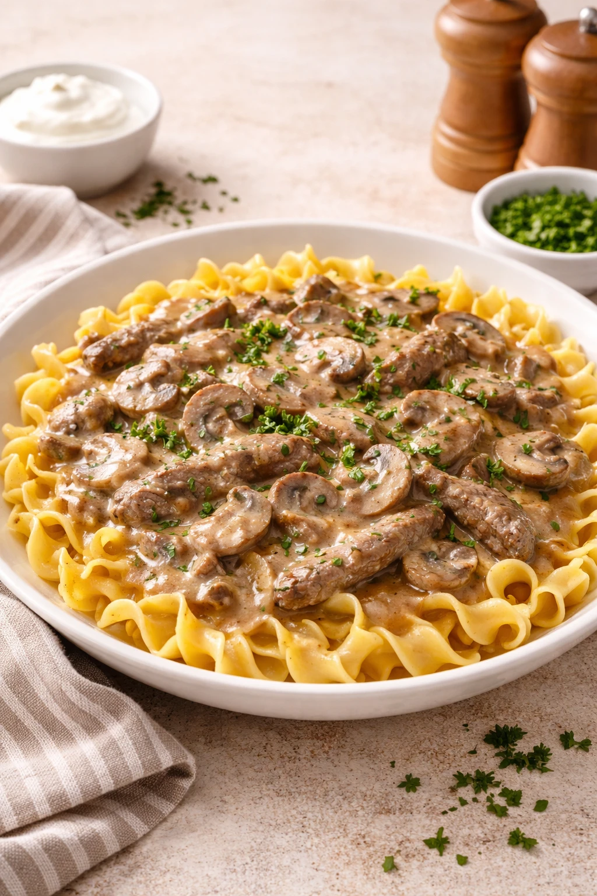
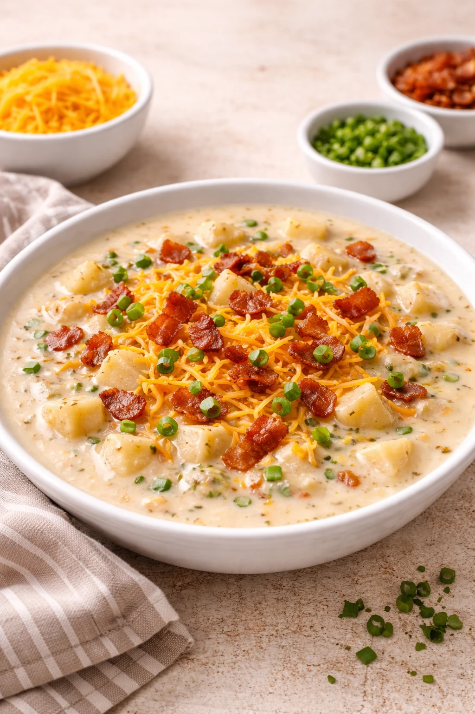
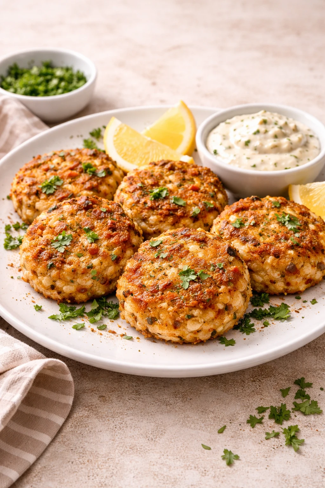
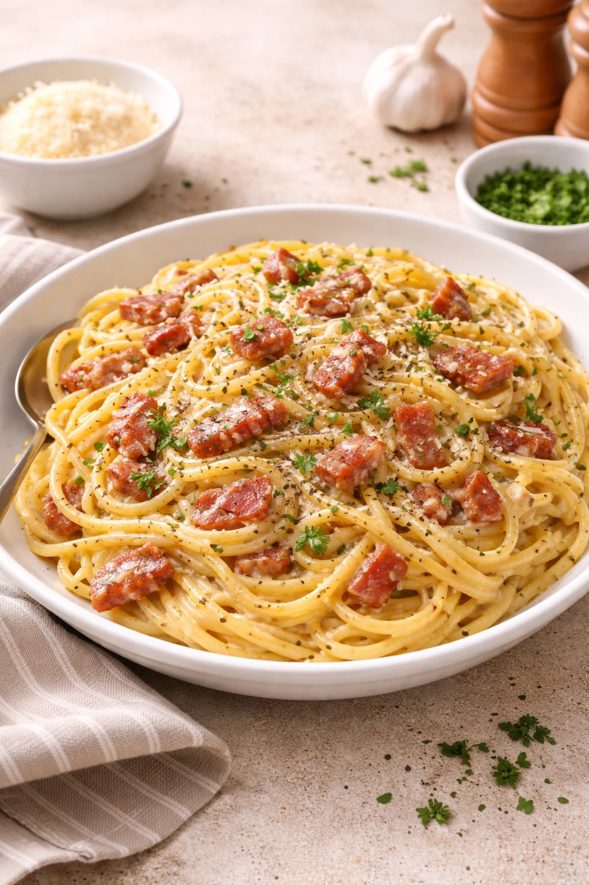
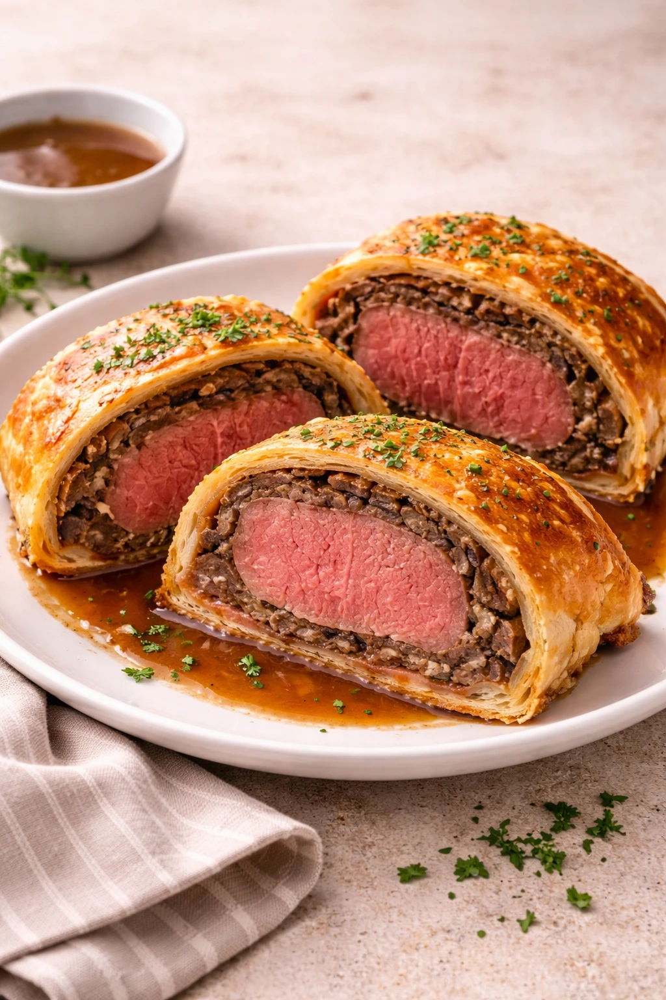
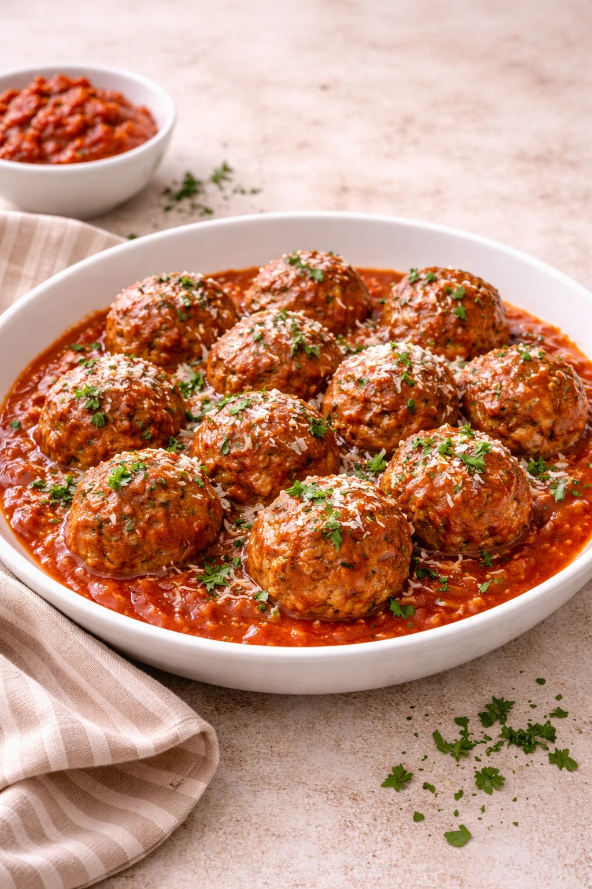
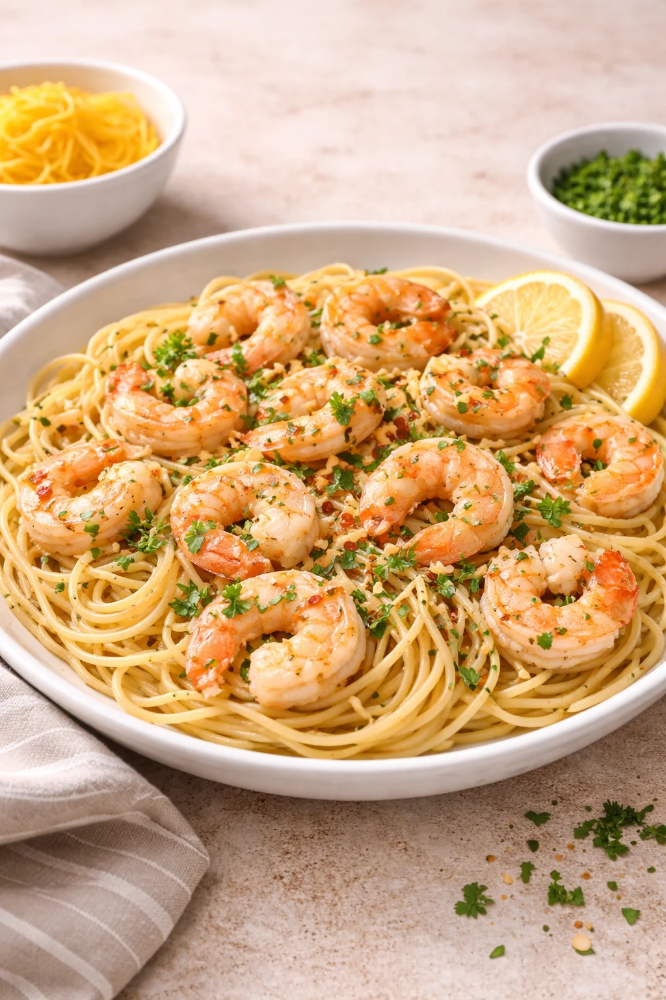

Chicken Francese
Chicken Francese
Serves 4
Ingredients
- 2 large chicken breasts, halved lengthwise
- ½ cup all-purpose flour
- 3 eggs, beaten
- 2 tbsp olive oil
- 3 tbsp unsalted butter, divided
- 3 garlic cloves, minced
- ½ cup dry white wine
- ¾ cup chicken stock
- 3 tbsp fresh lemon juice
- 2 tbsp capers, drained
- 2 tbsp flat-leaf parsley, chopped
Instructions
- Season cutlets well. Dredge in flour, shaking off excess, then coat in beaten egg.
- Heat oil and 1 tbsp butter over medium-high until shimmering. Cook cutlets 3 min per side until deep golden. Remove and tent with foil.
- Reduce heat to medium. Add garlic and cook 30 seconds. Pour in wine and reduce by half, scraping up the fond.
- Add stock and lemon juice. Simmer 3 min until slightly thickened.
- Off heat, swirl in remaining cold butter to finish the sauce. Stir in capers.
- Return chicken, spoon sauce over, and garnish with parsley.
Tips
- Cold butter off heat is the key to a silky, emulsified sauce.
- Don't skip the fond — those browned bits are where the flavor lives.

Shrimp Risotto
Shrimp Risotto
Serves 4
Ingredients
- 1½ lb large shrimp, peeled & deveined
- Chili flakes
- 3 tbsp unsalted butter, divided
- 2 tbsp olive oil
- 1 shallot, finely diced
- 4 garlic cloves, minced
- 1½ cups Arborio rice
- ½ cup dry white wine
- 5 cups warm seafood or chicken stock
- ½ cup Parmesan, grated
- 1 lemon (zest & juice)
- 2 tbsp flat-leaf parsley, chopped
Instructions
- Season shrimp. Sear in 1 tbsp butter and oil over high heat, 1–2 min per side until pink. Set aside.
- Reduce heat to medium. Add remaining butter and shallot, cook 3 min until soft. Add garlic, cook 1 min.
- Add rice and toast 2 min, stirring constantly, until edges turn translucent.
- Pour in wine and stir until fully absorbed.
- Add warm stock one ladle at a time, stirring frequently and waiting until each addition is absorbed, about 18–20 min total.
- Stir in Parmesan, lemon zest and juice. Fold shrimp back in, rest 1 min off heat, and serve topped with parsley.
Tips
- Keep stock warm — cold stock slows cooking and affects texture.
- Sear shrimp separately so they don't overcook in the risotto.

Beef Stroganoff
Beef Stroganoff
Serves 4
Ingredients
- 1½ lb beef sirloin, thinly sliced
- 2 tbsp unsalted butter, divided
- 1 tbsp olive oil
- 1 onion, thinly sliced
- 8 oz cremini mushrooms, sliced
- 3 garlic cloves, minced
- 1 tbsp all-purpose flour
- 1 cup beef stock
- 1 tbsp Worcestershire sauce
- 1 tsp Dijon mustard
- ¾ cup sour cream
Instructions
- Season beef well. Sear in 1 tbsp butter and oil over high heat in batches, 1 min per side. Set aside — don't crowd the pan.
- Reduce to medium. Add remaining butter and onion, cook 5 min until softened.
- Add mushrooms and cook 4–5 min until golden. Add garlic and cook 1 min.
- Sprinkle flour over and stir 1 min. Add stock and Worcestershire, scraping up the fond. Simmer 3–4 min until thickened.
- Stir in Dijon and sour cream. Warm through gently — do not boil.
- Return beef and any juices. Stir gently, season to taste, and serve over egg noodles with fresh parsley.
Tips
- Sear in batches over high heat so the beef browns rather than steams.
- Never boil after adding sour cream or it will curdle.

Baked Potato Soup
Baked Potato Soup
Serves 4
Ingredients
- 4 large russet potatoes, peeled & cubed
- 4 strips bacon, chopped
- 1 onion, finely diced
- 3 garlic cloves, minced
- 3 tbsp unsalted butter
- 3 tbsp all-purpose flour
- 3 cups chicken stock
- 2 cups whole milk
- ½ cup sour cream
- 1 cup cheddar cheese, shredded
- 3 green onions, sliced
Instructions
- Cook bacon in a large pot over medium heat until crispy. Remove and set aside, leaving the fat in the pot.
- Add butter and onion. Cook 4–5 min until softened. Add garlic and cook 1 min.
- Sprinkle flour over and stir 1 min. Pour in stock gradually, whisking until smooth.
- Add potatoes and bring to a boil. Reduce heat and simmer 15–18 min until tender.
- Lightly mash some potatoes in the pot to thicken. Stir in milk and sour cream. Warm through — do not boil.
- Season to taste and serve topped with cheddar, bacon, and green onions.
Tips
- Russet potatoes break down better than waxy varieties — ideal for a creamy texture.
- Don't boil after adding dairy or the soup may curdle.

Crab Cakes
Crab Cakes
Serves 4
Ingredients
- 1 lb lump crab meat, picked over
- ¼ cup mayonnaise
- 1 large egg, beaten
- 1 tbsp Dijon mustard
- 1 tsp Old Bay seasoning
- 1 tsp Worcestershire sauce
- 2 tbsp fresh lemon juice
- 2 tbsp flat-leaf parsley, chopped
- ½ cup panko breadcrumbs
- 2 tbsp unsalted butter
- 2 tbsp olive oil
Instructions
- Gently combine mayo, egg, mustard, Old Bay, Worcestershire, lemon juice, and parsley in a bowl.
- Fold in crab meat and panko, being careful not to break up the lumps. Season to taste.
- Shape into 8 patties about ¾ inch thick. Refrigerate at least 30 min to firm up.
- Heat butter and oil in a large skillet over medium-high until the foam subsides.
- Cook crab cakes 3–4 min per side until deeply golden and heated through. Work in batches if needed.
- Serve with lemon wedges and remoulade or tartar sauce.
Tips
- Chilling is non-negotiable — it's what keeps them from falling apart in the pan.
- Less filler means better crab cakes; add just enough panko to bind.

Spaghetti Carbonara
Spaghetti Carbonara
Serves 4
Ingredients
- 12 oz spaghetti
- 200g pancetta or guanciale, diced
- 3 garlic cloves, lightly crushed
- 4 large egg yolks
- 1 whole egg
- 80g Pecorino Romano, finely grated
- 40g Parmesan, finely grated
- 1 cup pasta water, reserved
Instructions
- Boil spaghetti in heavily salted water until al dente. Reserve 1 cup pasta water before draining.
- Cook pancetta in a large skillet over medium heat until crispy. Add garlic for 1 min, then remove garlic.
- Whisk egg yolks, whole egg, Pecorino, and Parmesan together. Season very generously with black pepper.
- Remove skillet from heat and let cool 1 min. Add drained pasta and toss to coat in the fat.
- Pour egg mixture over pasta, tossing quickly. Add pasta water a splash at a time until the sauce is silky and coats every strand.
- Serve immediately with extra cheese and a crack of black pepper.
Tips
- Never add cream — the creaminess comes entirely from eggs, cheese, and starchy pasta water.
- Off the heat is critical when adding the egg mixture or it will scramble.

Beef Wellington
Beef Wellington
Serves 4
Ingredients
- 2 lb center-cut beef tenderloin
- 2 tbsp olive oil
- 1 lb cremini mushrooms, finely chopped
- 4 garlic cloves, minced
- 2 shallots, minced
- 2 tbsp Dijon mustard
- 6 thin slices prosciutto
- 1 sheet puff pastry, thawed
- 2 egg yolks, beaten (egg wash)
- 2 tbsp fresh thyme leaves
Instructions
- Season tenderloin generously. Sear in hot oil 2 min per side until browned all over. Brush with Dijon and let cool completely.
- Cook mushrooms, shallots, garlic, and thyme in the same pan over medium heat, stirring, until all moisture evaporates, about 15 min. Cool completely.
- Lay prosciutto in overlapping slices on plastic wrap. Spread mushroom mixture evenly over prosciutto. Place tenderloin at edge and roll tightly into a log. Refrigerate 30 min.
- Wrap in puff pastry, sealing seams with egg wash. Brush all over with egg wash. Score lightly. Chill 15 min.
- Bake at 425°F (220°C) for 25–30 min until pastry is deep golden and internal temp reads 125°F (52°C) for medium-rare.
- Rest 10 min before slicing.
Tips
- The duxelles (mushroom mixture) must be completely dry or the pastry will be soggy.
- Chilling at each stage keeps the layers firm and the shape tight.

Meatballs
Meatballs
Serves 4
Ingredients
- 1 lb ground beef (80/20)
- ½ lb ground pork
- ½ cup breadcrumbs, soaked in ¼ cup milk
- 2 eggs
- ½ cup Parmesan, grated
- 4 garlic cloves, minced
- ¼ cup flat-leaf parsley, chopped
- 1 tsp dried oregano
- ½ tsp red pepper flakes
- 28 oz crushed San Marzano tomatoes
Instructions
- Combine beef, pork, soaked breadcrumbs, eggs, Parmesan, garlic, parsley, oregano, and pepper flakes. Mix gently until just combined — do not overwork.
- Roll into 1½-inch balls. Refrigerate 20 min to firm up.
- Brown meatballs in olive oil over medium-high heat, turning to sear all sides, about 6 min. Remove and set aside.
- In the same pan, sauté a little garlic in olive oil, then add crushed tomatoes. Season and simmer 10 min.
- Nestle meatballs into sauce. Cover and simmer on low for 20 min.
- Serve over pasta or with crusty bread, topped with extra Parmesan.
Tips
- Soaking breadcrumbs in milk (panade) keeps the meatballs tender and moist.
- Mix with your hands just until combined — overworking makes them tough.

Shrimp Scampi
Shrimp Scampi
Serves 4
Ingredients
- 1½ lb large shrimp, peeled & deveined
- 16 oz linguine
- 4 tbsp unsalted butter
- 3 tbsp olive oil
- 6 garlic cloves, thinly sliced
- ½ tsp red pepper flakes
- ½ cup dry white wine
- 1 lemon, juice & zest
- ½ cup pasta water, reserved
- ¼ cup flat-leaf parsley, chopped
Instructions
- Cook linguine in salted boiling water until al dente. Reserve ½ cup pasta water before draining.
- Pat shrimp dry and season. Sear in 1 tbsp butter and olive oil over high heat, 1 min per side. Remove and set aside.
- Reduce heat to medium. Add remaining butter, garlic, and pepper flakes. Cook 1–2 min until garlic is fragrant but not browned.
- Pour in white wine and lemon juice. Simmer 2 min, scraping up any bits.
- Add pasta and a splash of pasta water. Toss to coat, adding more water as needed for a glossy sauce.
- Return shrimp, toss together, and finish with lemon zest and parsley.
Tips
- Don't overcook the shrimp — pull them off heat while still slightly underdone as they'll finish in the sauce.
- Pasta water is the secret to a silky, emulsified sauce that clings to every noodle.
No recipes found.